Conoce a nuestro colaborador
Duoc UC
Reconocido por su prestigio y con 20 sedes a nivel del país, Duoc UC es un instituto de educación superior que forma a personas en el ámbito técnico y profesional con una sólida base ética inspirada en los valores cristianos, capaces de aportar de forma significativa al mundo laboral y comprometidas con el desarrollo de la sociedad.
 

Duoc UC y eLokolector
La colaboración entre eloKoLector y DuocUC surge a partir de los valores compartidos por ambas instituciones, enfocada en brindar apoyo al prójimo con recursos limitados o que requieran servicios de donación de libros. Este esfuerzo entre ambos busca fortalecer el acceso a la educación y la cultura, promoviendo la igualdad de oportunidades a las comunidades desfavorecidas. A través de esta alianza, se pretende no solo facilitar la entrega de material bibliográfico, sino también fomentar un espíritu de solidaridad y responsabilidad social, enriqueciendo el entorno educativo y cultural de los beneficiarios.